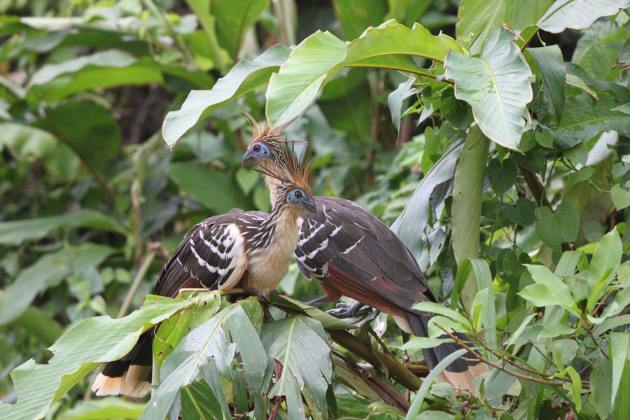
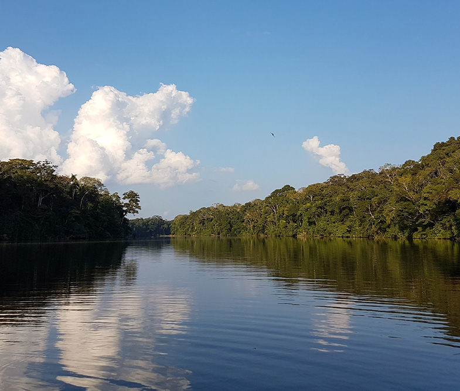
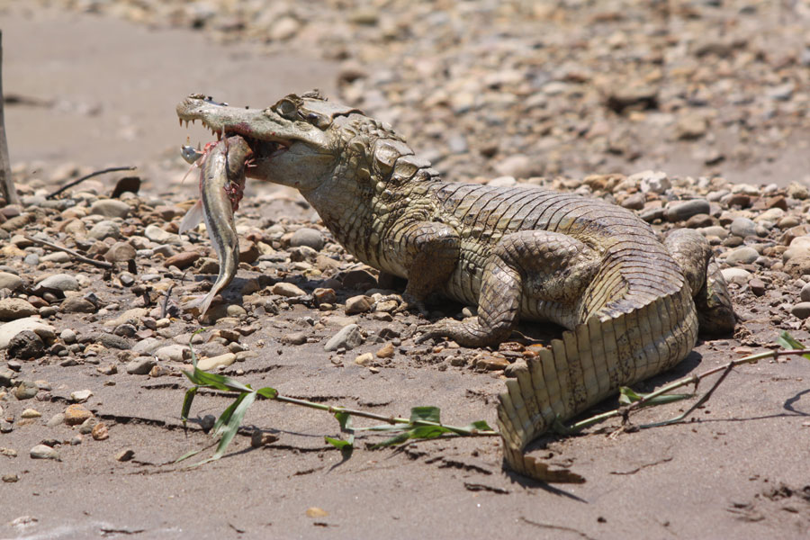
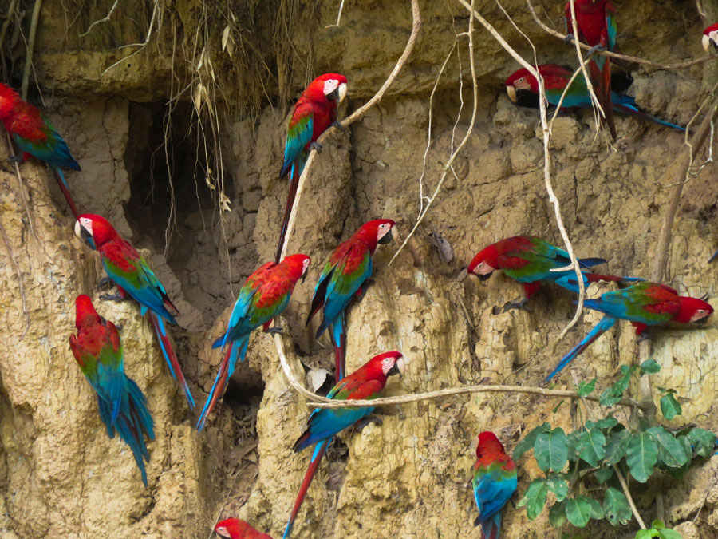
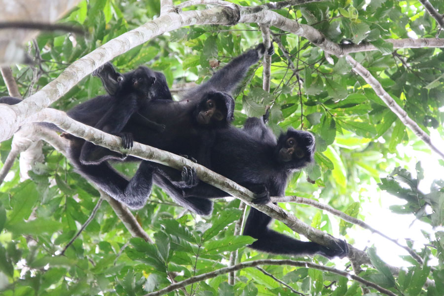

Wildlife Tours from Cusco | Hidden Jungle Cusco
An authentic, local journey designed to explore Peru's untouched Amazonian biodiversity.
Explore the Amazon Rainforest
Want to See the Best Wildlife in Peru?
Let's Explore our Manu National Park tours from Cusco
The Manu National Park is renowned for being a highly biodiverse area outside of Cusco. From Cusco to Manu you can see animals such as: macaws, monkeys, caimans, local birds, capybaras, and the allusive jaguar. Our tours range from 3 to 8 days for travelers with different amounts of time, and we can explore different areas in Manu depending on your interest, budget, and itinerary. Every single trip will pass through the Andes mountains Peru, pass through the cloud forest, and visit the low jungle as well. From quick trips to the Amazon to a wildlife photography tour, we can plan your perfect rainforest adventure. Let’s explore the options below.

Cusco to Machu Wasi
As trips to Manu go, Machu Wasi is the closest destination where you will get to see a nice range of wildlife. From Hoatzins to Herons, this oxbow lake is a haven for birds. On a trip to Machu Wasi, we will pass thorugh the Andes and Cloud Forest, embark on a boat in Atalaya port, and take a short boat ride to a nearby lodge. From this lodge, we will explore the neighboring jungle, and Machu Wasi (hiking and a wooden raft.) These trips are ideal for short Manu tours in Peru.

Cusco to Nuevo Eden
Nuevo Eden: our hometown and our base for exploring the Manu National Park. This is our top-recommended destination of all of our trips, for travelers with 4 or 5 days. Our trips to Nuevo Eden start in Cusco, pass through the highland where you will learn some Andes Mountains facts, visit the cloud forest where you will search for animals and admire the views, then arrive to the low jungle by boat. There is a dramatic shift in altitude, weather, and scenery on this journey: you won’t believe your eyes. During our stay in Nuevo Eden, we will visit a clay lick to watch for tapirs, take a night walk to look for creepy crawlies, visit our tiny village, and travel by boat. These trips are our classic Manu tours in Peru, and are our most popular!

Cusco to Manu Reserved Zone
For our true nature lovers, the Reserved Zone of the Manu National Park is a highly anticipated destination. You can access this area with 6 days. As we travel downriver from Nuevo Eden and head west onto the Manu River, we will have the chance to see caimans, capybaras, and jaguars on the riverbank. We will visit a lodge run by an indigenous group, the Matsiguenka Lodge, and visit another oxbow lake that’s home to giant river otters. This is the ultimate eco-tour for wildlife lovers!

Cusco to Blanquillo
Blanquillo is an exciting alternative to the Manu Reserved zone. From Nuevo Eden, we will travel downriver and head east, toward Puerto Maldonado. On this trip, the riverbanks are the homes to caimans, capybaras, tons of birds, as well as jaguars. Blanquillo is the home to a huge macaw clay lick, where you will get to see more macaws than you can possibly imagine all together (weather permitting.) We love to set up camp and soak in the views, sounds, and energy of the area. Our 8-day trip to Blanquillo is our recommended wildlife photography tour for our shutter-excited travelers. With a longer time to visit Manu from Cusco, we can customize your journey to visit the places that have the best wildlife activity.

Book Your Perfect Amazon Wildlife Tours Today
Thank you for exploring the options and destination for our Wildlife Tours. We are confident that our passion for the area, expertise in curating great adventures, and desire to share a taste of the local culture makes our itineraries the best Manu National Park tours out there. Feel free to reach out or fill out a booking form to speak with us directly!
FAQ
Day-by-Day Itinerary
We’re going to the Manu Biosphere Reserve, in the province of Madre de Dios. There is a single road, mostly unpaved, that connects Cusco to Manu. The Manu Biosphere has 2 parts: the Cultural / Buffer Zone and the Reserved Zone. The Cultural Zone has more relaxed rules regarding human impact. The Reserve Zone is more of an adventure but there’s more of a chance of seeing special animals like caiman and jaguars. Manu is remote and has less human impact than other places in the jungle. It’s a true gem.
Real talk: you will spend a lot of time traveling. But the scenery is incredible.
The jungle has 2 seasons: rainy season and dry season. Rainy season is from December to March, and the dry season is from April to November. We only operate tours during the dry season. However, this is the rainforest, so it can rain at any time of year.
You can expect temperatures ranging from 15 degrees at night and about 30 degrees during the day. Under the jungle canopy, it feels a bit cooler.
The Manu Biosphere is a wild zone for animals. Any animals we see will be living their normal lives in their natural habitat. Therefore, it’s hard to guarantee any particular species.
Everyone on the travel team, including the chef and drivers, will be looking for animals along the way, and we encourage all travelers to do so as well. The more eyes searching, the more chance of seeing creatures.
The members of the travel team are all trained in basic first aid, and we travel with a basic first aid kit. Along the way, there are “medical posts” in many towns. These posts are clinics that provide daily care for local residents. In the event of an emergency, we will need to return to Cusco.
There is no cell signal deep in the jungle, and there is wifi available in the town of Nuevo Eden, but it is not 100% reliable. We encourage you to consider yourself “off the grid” for the duration of your jungle trip.
For emergency communication, we have a Garmin InReach satellite device for sending texts or calling for emergency help when off the grid.
For the year 2021, we will only operate tours with single groups. We welcome couples, families, and groups of friends. We welcome groups of up to six people but they must be a single group of family members or friends who are traveling together.
The guided tours include everything you’ll need for the duration of the tour. However, there will be opportunities to stop at local shops along the way to buy other things. Also, the members of the travel team will really appreciate any tips at the end of the tour. Try to bring small bills!
Absolutely. Our guided tours are appropriate for children who can walk for a while without any help, and are curious about the world around them. For younger children, a stay at our Jungle Bungalow may be a better fit as your daily schedule will be more customized. Our family in the jungle has many children who will love to share their knowledge of the jungle with other kids.
Yes. Every guided tour does involve a lot of walking, but the walking is slow and quiet so as to not disturb the animals. You’ll also have to climb in and out of the boat.
Although the jungle has dangerous animals and such, your tour guide knows the jungle very well and will be on the lookout for anything dangerous. If you’re scared of snakes or tarantulas and would prefer NOT to look for them, just let your guide know
There is some form of electricity at each lodge. The clay lick platform and campsites won’t have electricity.
We will travel with large bottles of purified water that will be used both for drinking and for preparing food. The chef is versatile and can easily prepare meals that suit your personal desires. Vegetarian, vegan, gluten-free, no problem! Just let us know. The chef will incorporate local, fresh products into meals as possible as well.
Yes. Each day of the tour (except the 6-day tours) there will be the possibility of stopping at a small store. Pharmacies are available on the first, second, and last day of each tour.